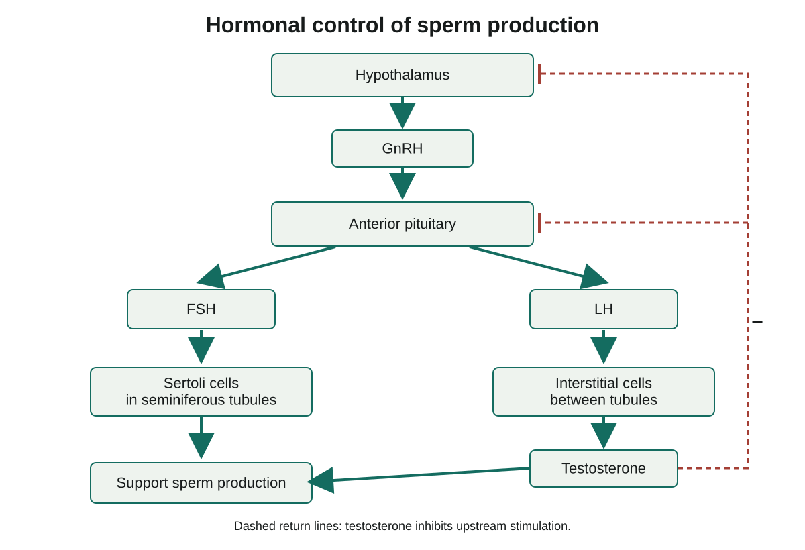
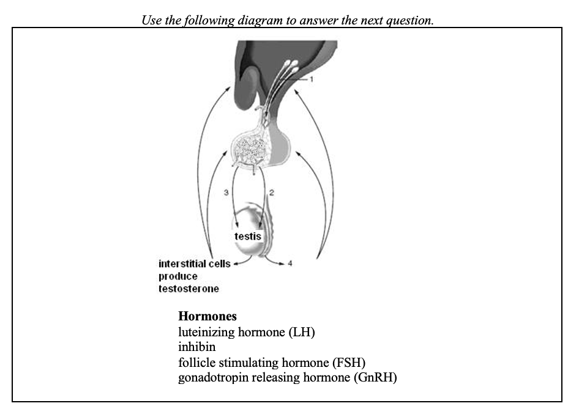
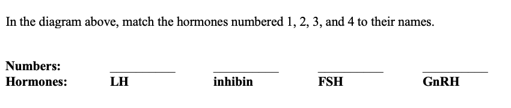

One pituitary signal divides into two testicular jobs
support developing sperm, while release . Both contribute to reproduction, but a coordinating signal must reach the right target to affect the right job. We will trace each hormone from its release site to its target instead of treating the as one undivided target.
The hypothalamus, a region of the brain, releases , or GnRH. GnRH acts on the anterior pituitary, the hormone-releasing front part of the pituitary gland below the brain. It stimulates release of , FSH, and , LH. The names refer to functions in the female system, but both hormones also have important male-system targets.
FSH travels in the blood and acts on Sertoli cells within the . It supports the Sertoli-cell functions that help sperm develop. LH travels in the blood to interstitial, or Leydig, cells between the tubules and stimulates testosterone release. FSH does not turn a Sertoli cell into a sperm, and LH does not make an interstitial cell become one.
Read the diagram downward from the hypothalamus through GnRH to the anterior pituitary. At the split, follow the left FSH branch to Sertoli cells, then the right LH branch to interstitial cells and testosterone. The green connections represent release or stimulation in this simplified pathway, not ducts carrying sperm. The diagram puts sources, hormones and target cells in separate boxes so you can say what each connection means.
When using the optional textbook p493, keep this distinction: its sentence assigning FSH-stimulated sperm production to interstitial cells is incorrect. FSH supports Sertoli-cell activity; LH stimulates interstitial-cell testosterone production. Developing reproductive cells form the sperm. This distinction agrees with the cell locations on p480 and the two target branches in the teacher diagram.
Male hormonal feedback

Follow release sites, hormones and target cells separately. Dashed lines show negative feedback.Testosterone supports the tubules and other tissues
Testosterone helps maintain sperm production and reproductive tissues. Within the testis, testosterone and FSH-supported Sertoli-cell activity work together to support . Trace the diagram's connection from testosterone toward the sperm-support box. The two branches contribute to a shared process without having identical direct targets.
Testosterone also reaches other tissues through the blood. At it contributes to changes such as a deeper voice, facial-hair growth and muscle development. Continued hormone activity helps maintain reproductive function after puberty. A signal affects tissues able to respond to it; its presence in blood does not mean every cell makes the same response.
are a group of hormones associated with male reproductive development and function. Testosterone is the main androgen followed here. Hormones often associated with one reproductive system can also occur in the other. The effects depend on the signal, its concentration and timing, and the responding tissue.
The phrase 'LH causes facial-hair growth' skips a consequential step. LH first stimulates interstitial cells to release testosterone; testosterone then affects responsive tissues. Distinguishing a direct target from a later effect helps you interpret a diagram or a question that asks what a hormone does directly.
Follow the return signal to understand negative feedback
Suppose testosterone rises in a functioning control system. Testosterone-related feedback reduces stimulation from the hypothalamus and anterior pituitary. Less GnRH and especially less LH stimulation tends to limit further testosterone production. The response opposes the original rise, which is why it is called .
On the diagram, start at the testosterone box and follow the red return line at the right up to the hypothalamus and anterior pituitary. The barred endings and minus sign mean inhibition, or reduced stimulation. They do not mean that testosterone flows backward through the green pathway or becomes LH. The dashed return line is a relationship between hormone level and control activity, not a measured time graph.
Now reverse the initial change. If testosterone falls and the control centres still respond normally, its inhibitory feedback is reduced. More GnRH/LH stimulation may then help raise testicular testosterone production. That compensation depends on functioning targets; an increased signal cannot guarantee recovery if the target cells cannot respond.
Sertoli cells also release . This hormone feeds back to the anterior pituitary to reduce FSH release. Inhibin provides information about the sperm-support pathway, whereas the testosterone loop is especially important for LH control. The retained diagram shows the testosterone loop but does not draw the separate inhibin loop. To describe that omitted loop in words, start at Sertoli cells, name inhibin, then follow it to reduced FSH release from the anterior pituitary.
Negative describes the opposing relationship, not a harmful hormone or a situation in which every quantity falls. A lower starting hormone can lead to stronger upstream stimulation; a higher starting hormone can lead to weaker stimulation. In each case, compare the response with the change that started the loop.
An outside androgen can change the control signals
Consider a model in which an outside androgen contributes to the signal detected by the control centres. The increased androgen feedback can suppress GnRH and the pituitary signals FSH and LH. Reduced LH means less stimulation for the testis's own testosterone production; reduced FSH means less Sertoli-cell support. Sperm production can decline despite the added androgen signal.
The distinction is between the hormone signal detected in circulation and the local stimulation needed to maintain testicular activity. An outside source does not reproduce every feature of normal local production. A higher circulating androgen reading is therefore not evidence that more sperm must be produced.
Use 'outside androgen' for this model rather than grouping every performance-related substance together. The teacher slide mentions hGH alongside steroids, but human growth hormone is a protein hormone, not an anabolic steroid. The androgen-feedback explanation here does not establish the effect of every substance or provide directions for hormone use.
If you try the optional numbered hormone diagram, identify what each arrow connects before assigning a name. A hypothalamus-to-pituitary signal, a pituitary-to-interstitial signal, a pituitary-to-Sertoli signal and a returning inhibin signal have different sources and targets. Then read the requested hormone order beneath the image; the order of blanks need not match the order of the diagram numbers.
These examples explain regulation under stated conditions. They do not diagnose a person's hormone state from appearance or one measurement. We have followed how two cell targets support the male pathway; the female reproductive structures provide the setting for the next set of hormone effects.
Worked example
More signal cannot repair an unresponsive target by itself
In a hypothetical model, interstitial cells stop responding normally to LH. Testosterone falls, but the hypothalamus and anterior pituitary still detect feedback and can change their output. Predict the direction of upstream stimulation, then decide whether it guarantees restoration of testosterone.
- Identify the first changed link: LH can no longer produce its usual response in interstitial cells. The model specifies low testosterone rather than a blocked sperm-transport duct.
- Follow the return loop. Lower testosterone reduces inhibitory feedback to the functioning control centres. GnRH/LH stimulation can therefore rise rather than fall.
- Follow the forward pathway again. The increased LH still meets the unresponsive target. More signal does not, by itself, restore the missing target response.
- Give both parts of the conclusion: upstream stimulation can increase while testosterone remains low. A feedback system attempts to oppose the change, but successful compensation requires its affected parts to work.
- Check the limit. The model does not specify every FSH or inhibin change, a measured sperm count, or a treatment. Keep those quantities unresolved instead of extending the LH prediction to every hormone.
Optional application
In a different model, inhibin falls while testosterone stays at its usual level and the anterior pituitary can respond. Which pituitary signal is directly released from inhibin's restraint? Explain why this observation does not by itself require LH to rise.
Answer withheld for first attempt
Practise with support
Apply the explanation
Try both questions. Use the hint to revise your thinking after an incorrect answer.
Stop and think
Try this before opening the explanation
Does LH make sperm directly?
Answer withheld for first attempt
Open required check · Hormonal control of the male reproductive system
Explain what you have learned
This check counts toward chapter progress. Correct the 2 selections to unlock 2 written explanations. Saving writing records your response; it does not grade its accuracy.
Not started Optional application 4
This is optional written practice. It does not change required progress.

Use the diagram or data with the question.
Use the diagram or data with the question.Optional response. Select Save response to collect it. Maximum 5000 characters.